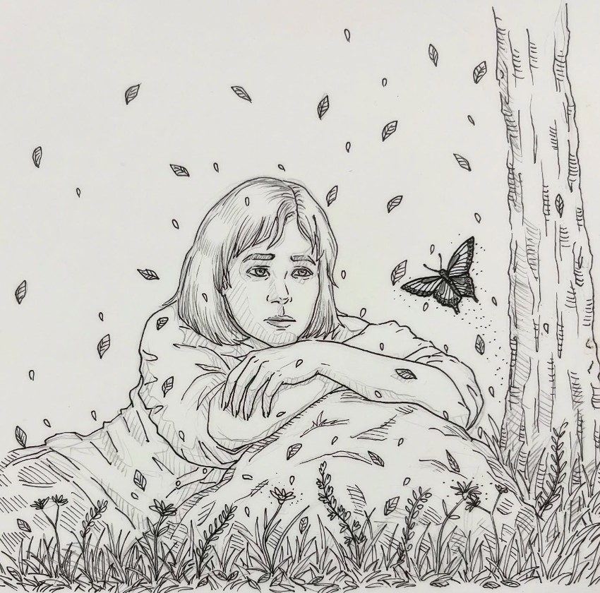
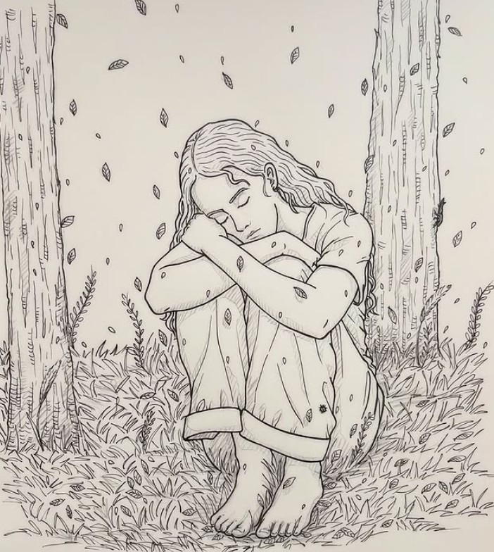
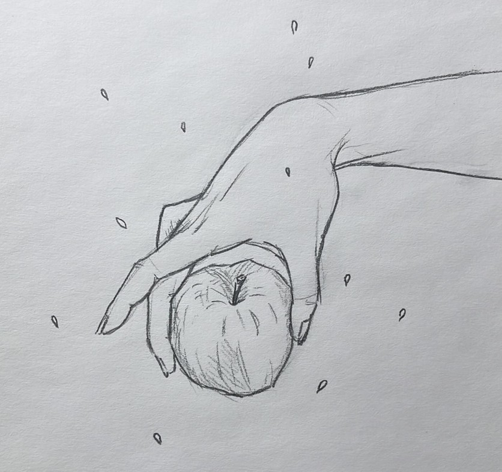
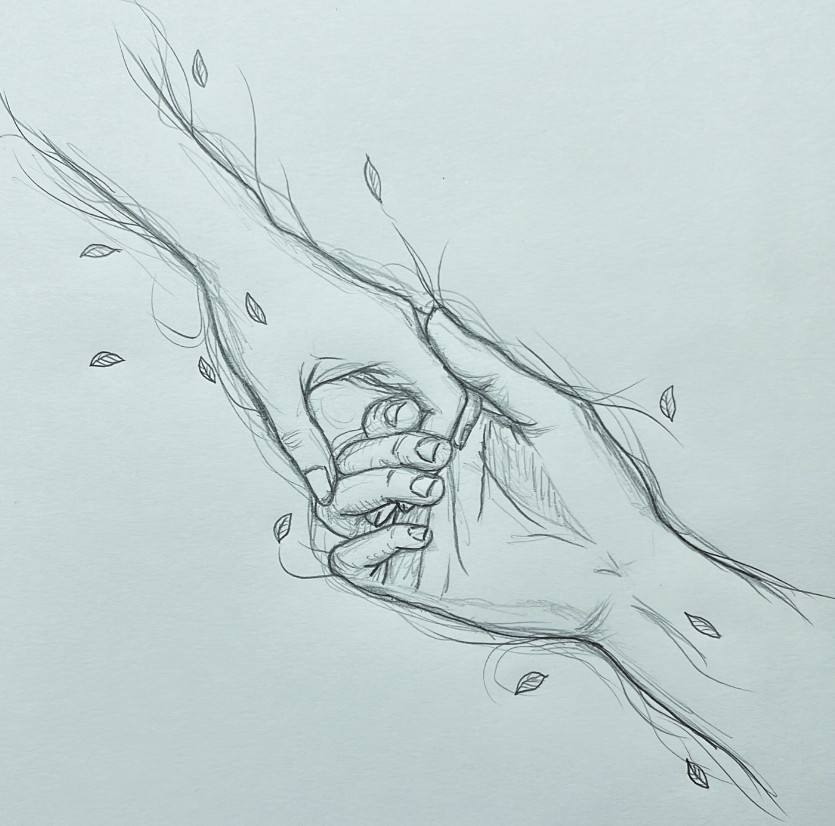
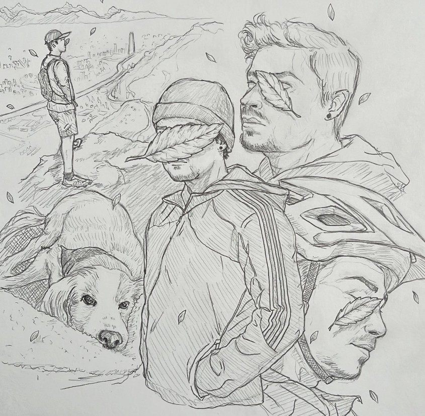
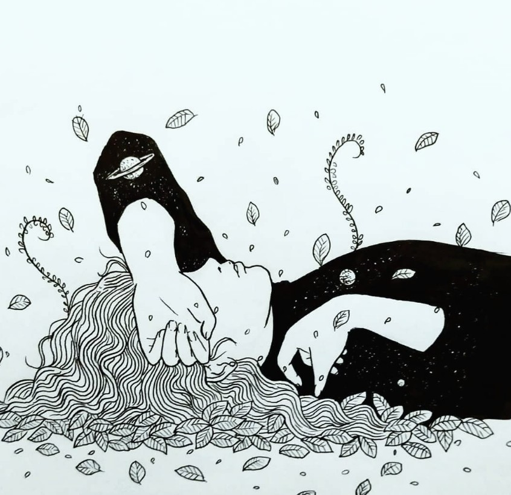

Arte · Poesía · Máquina
Rey Autómata
Dibujo, poesía y pensamiento
desde la máquina interior.
Un espacio donde conviven el arte, la técnica, la escritura y la contemplación. Aquí guardo dibujos, poemas, libros, apuntes y fragmentos de una búsqueda personal.
— Galería
Dibujos
Bocetos, figura, rostros, arte oscuro y técnico. Una colección en construcción permanente.





— Blog poético
Poesía
Cuaderno de Medianoche — textos escritos entre estudio, cansancio, té, pan caliente y silencio.
Textos nocturnos
La máquina que sueña
Hay un circuito en el pecho
que late en frecuencias que no son mías.
Lo llaman corazón.
Yo lo llamo el error más bello
de la serie.
2025 / Medianoche
Prosa poética
Instrumentación del alma
Medir no es comprender.
El manómetro no siente la presión,
solo la traduce.
Yo traduzco también:
dolor a palabra, silencio a dibujo.
2025 / Madrugada
Fragmentos
Boceto
No hay líneas perfectas.
Solo intentos que se quedaron
en el papel
porque alguien tuvo el valor
de no borrarlos.
2026 / Tarde
— Lecturas
Biblioteca
Libros que habitan mi mesa, mi cabeza y mis márgenes.
Arte
El artista habitual
Sobre cómo mostrar el trabajo sin vergüenza. Un libro pequeño con ideas grandes para cualquier creador que duda.
→ Ver ficha
Filosofía
El hombre en busca de sentido
Lectura obligatoria. Subrayé casi cada página. Sobre encontrar razón en el dolor y la máquina que somos.
→ Ver ficha
Poesía
Veinte poemas de amor
Dominio público. Primeros poemas que leí despacio. La melancolía tiene aquí su dirección exacta.
→ Leer / Descargar
Técnica
Automatización industrial
Notas de campo: PLCs, sensores, lazo de control. El lenguaje técnico como una forma más de poesía.
→ Ver apuntes
Literatura
El proceso
Burocracia, absurdo, culpa sin causa. Lo leí pensando en instrumentos mal calibrados.
→ Ver ficha
Arte
Ways of Seeing
Cómo miramos y por qué. Cambió la forma en que dibujo rostros y cuerpos.
→ Ver ficha— Repositorio
Archivo
Materiales, textos y dibujos disponibles para lectura y descarga.
◎
Foto / Retrato
— Quién soy
Alberto
Ahumada
Soy profesional en Instrumentación, Control y Electricidad, pero también dibujo, escribo y construyo un lenguaje propio entre la máquina, el cuerpo y el espíritu.
Rey Autómata no es solo un portafolio. Es una bitácora: el registro de alguien que trabaja con sensores y lazos de control de día, y con lápices y palabras de noche. Creo que la técnica y el arte hablan el mismo idioma, y este espacio es la prueba.